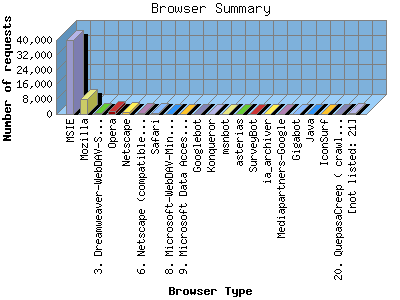

NPS Internet Solutions, Inc.
NPS Internet Solutions, Inc.
The Browser Summary identifies the most popular web browsers used to visit
this site.
Browsers are broken down by recognized categories such as
Netscape Navigator/Communicator, Microsoft Internet Explorer, WebTV, Opera
and the like. Within each category is also a subgroup by version number
such as 'MSIE 5.0' or 'Netscape 4.5'.
This report shows the first 20 results by requests for pages. This report is sorted by number of requests for pages.

| Browser Type | Number of requests | Number of page requests | Percentage of the bytes | |
|---|---|---|---|---|
| 1. | MSIE | 39,976 | 3,712 | 73.46% |
| MSIE/6 | 38,883 | 3,612 | 71.38% | |
| MSIE/5 | 1,018 | 93 | 1.98% | |
| MSIE/4 | 71 | 6 | 0.08% | |
| MSIE/3 | 3 | 1 | 0.02% | |
| 2. | Mozilla | 8,198 | 706 | 17.97% |
| Mozilla/1 | 8,162 | 704 | 17.84% | |
| Mozilla/0 | 8 | 1 | 0.02% | |
| 3. | Dreamweaver-WebDAV-SCM1.02 | 610 | 302 | 0.05% |
| 4. | Opera | 1,869 | 185 | 3.81% |
| Opera/7 | 1,820 | 172 | 3.76% | |
| Opera/6 | 49 | 13 | 0.05% | |
| 5. | Netscape | 834 | 77 | 2.09% |
| Netscape/7 | 790 | 69 | 1.99% | |
| Netscape/8 | 3 | 3 | 0.00% | |
| Netscape/6 | 34 | 3 | 0.09% | |
| Netscape/4 | 7 | 2 | 0.01% | |
| 6. | Netscape (compatible) | 284 | 54 | 0.51% |
| 7. | Safari | 587 | 46 | 1.26% |
| Safari/125 | 504 | 41 | 1.06% | |
| Safari/85 | 73 | 4 | 0.18% | |
| Safari/100 | 8 | 1 | 0.01% | |
| 8. | Microsoft-WebDAV-MiniRedir | 48 | 38 | 0.00% |
| Microsoft-WebDAV-MiniRedir/5 | 48 | 38 | 0.00% | |
| 9. | Microsoft Data Access Internet Publishing Provider Protocol Discovery | 32 | 28 | 0.00% |
| 10. | Googlebot | 31 | 26 | 0.01% |
| Googlebot/2 | 31 | 26 | 0.01% | |
| 11. | Konqueror | 59 | 22 | 0.06% |
| Konqueror/3 | 59 | 22 | 0.06% | |
| 12. | msnbot | 21 | 21 | 0.00% |
| msnbot/0 | 21 | 21 | 0.00% | |
| 13. | asterias | 13 | 13 | 0.00% |
| asterias/2 | 13 | 13 | 0.00% | |
| 14. | SurveyBot | 9 | 9 | 0.00% |
| SurveyBot/2 | 9 | 9 | 0.00% | |
| 15. | ia_archiver | 7 | 4 | 0.01% |
| 16. | Mediapartners-Google | 5 | 4 | 0.00% |
| Mediapartners-Google/2 | 5 | 4 | 0.00% | |
| 17. | Gigabot | 3 | 3 | 0.00% |
| Gigabot/1 | 2 | 2 | 0.00% | |
| Gigabot/2 | 1 | 1 | 0.00% | |
| 18. | Java | 2 | 2 | 0.00% |
| Java/1 | 2 | 2 | 0.00% | |
| 19. | IconSurf | 2 | 2 | 0.00% |
| IconSurf/2 | 2 | 2 | 0.00% | |
| 20. | QuepasaCreep ( crawler@quepasacorp.com ) | 2 | 2 | 0.00% |
| [not listed: 21] | 547 | 14 | 0.79% | |
This report was generated on August 16, 2004 03:59.
Report time frame December 30, 2003 01:23 to August 16, 2004 09:47.
| Web statistics report powered by: | |
|
NPS Internet Solutions, Inc.
|
|
| Web statistics report produced by: analog 5.32 / Report Magic 2.21 |